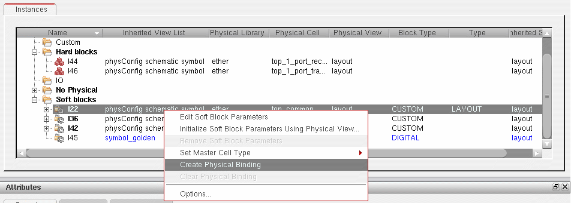

3
Configuring the Physical Hierarchy
Configure Physical Hierarchy (CPH) is a physical hierarchy configuration utility that lets you specify how a layout implementation is generated from a specific schematic design.
The CPH window has three modes of operation:
- Hierarchy Configuration Mode controls how the physical hierarchy is generated from your logical design, including which logical components are to be ignored in the physical implementation and which physical views are used to implement the logical components.
-
Component Types Mode lets you view the library-level component types. In addition, this mode lets you create, edit, and remove the design-level component types, which identify the NMOS and PMOS transistor cells in the design and set the parameters for device chaining and folding.
Note:
- The Component Types Mode also lets you identify NFIN and PFIN devices in the design and set the parameters for device chaining and folding.
-
If the Configure Physical Hierarchy window is not enabled, the component type information is directly read from the
cph.lamfile. See LAM Files and Configuration Views.
-
Soft Block Mode lets you configure and specify bindings for the soft blocks that will be created by the Floorplan – Generate Physical Hierarchy command. You select the instances to be included and define the boundary, pin, and blockage parameters for the block you want to create. You can also remove the parameters from an existing soft block to prevent it from being created when the physical hierarchy is generated.To edit an existing soft block that has already been generated in the layout view, use the Edit Soft Blocks command. For more information, see Editing Soft Blocks.
The introduction of this functionality means that the layout designer no longer needs to have “write” access to the schematic design to add or modify the properties that drive layout generation. As these properties are now controlled in the Configure Physical Hierarchy Window, a layout designer can define different physical configurations and view different physical implementation possibilities without changing the schematic view.
This chapter discusses the following topics:
- LAM Files and Configuration Views
- Converting Data to Use the IC 6.1 Layout XL Schema
- Launching Configure Physical Hierarchy
- Configure Physical Hierarchy Window
LAM Files and Configuration Views
Underlying the Configure Physical Hierarchy functionality is a Layout XL Schema in IC 6.1. It comprises two new data formats.
-
For schematic and layout library data, there is a library and attributes mapping (LAM) file to store the symbol properties that drive layout generation, component type information for a given library, and library and cell-level mapping information. This file is called
cph.lamand is stored in the following location:
There is no graphical user interface to help you create or edit a LAM file. For more information on the LAM file syntax, see Library and Attributes Mapping File Syntax.library/.cadence/dfII/cph/lam/cph.lam -
For layout design data, there is a physical configuration (physConfig) view; which comprises a number of files that store design-specific overrides, including the schematic expansion rules that drive layout generation; design component types; and cell and instance mapping rules. Every Layout XL session operates in the context of a physical configuration view, whether generated automatically or user-specified.
When you launch Layout XL from a schematic window, the schematic view is re-opened in the context of the physical configuration view being used for the session, which might be different from the configuration the schematic was using previously. The schematic window banner updates to indicate the name of the physical configuration view currently being used.
One effect of this is that you might need to re-extract the schematic view in order to take into account the settings in the physical configuration view. The system will inform you if this extraction is required.
If you close the Layout XL session by closing the layout window only, the schematic view is re-opened with no physical configuration context.
The Configure Physical Hierarchy window is the interface used to create and edit this view.
Converting Data to Use the IC 6.1 Layout XL Schema
This section explains how you decide whether you need to convert your existing data to use the new Layout XL schema in IC 6.1; what happens to the data during the conversion; and how to run the conversion commands. It contains the following sections.
- Do I Need to Convert Data to the Layout XL IC 6.1 Schema
- How Data is Converted to the Layout XL IC 6.1 Schema
- Converting Schematic Library and Design Data
- Converting Layout Designs
- Troubleshooting the Conversion
Do I Need to Convert Data to the Layout XL IC 6.1 Schema
If your schematic library or layout design data uses any of the following features then you must convert it to the new IC 6.1 Layout XL schema.
-
Library-level component type information stored in a
data.dm(orprop.xxfor earlier releases) file in the library directory, or design-level component type overrides stored as anlxComponentTypeproperty on the layout view. -
The following properties (or their CDF equivalents) stored on a symbol or schematic view.
lxMfactorSplitlxParamsToIgnorelxParamsToIgnoreForChecklxRemoveDevicelxRoundinglxStopListlxUseCelllxViewListAfter your data has been converted, if you change the name of an instance, or change it from vectored to non-vectored, then Configure Physical Hierarchy will not be able to find the converted properties for the new instance name.These properties will not be converted if the variableCPH_USE_SCHEM_PROPis turned on. For more details, see Controlling CPH with Schematic Properties. - A Layout XL map file referenced from a layout view.
For information on how this data is converted, see Figure .
Migration Path
The migration path depends on the format of your original data.
-
For OpenAccess 2.0 data from an ICOA 5.1.41 release, use the
dfIIoa20222translator to convert your data to OpenAccess 2.2. By default,dfIIoa20222automatically converts your data to use physical configuration views. - For OpenAccess 2.2 data from an IC 5.2.51 or IC 6.1EA (Early Adopter) release, you must convert your schematic library data manually using the utilities described in this section. Your layout design data is converted automatically when you open a design for the first time in Layout XL.
Automatic Mode
If you use none of the features described above, then you do not need to convert your data to use physical configuration views.
When you start Layout XL in IC 6.1, set the Configuration option to Automatic in the Startup Option form. Layout XL creates a temporary physical configuration view, handles all operations related to the physical configuration view automatically, and removes the temporary view again when it is no longer required; i.e., when you convert your data to use physical configuration views or edit the automatic configuration and save it.
For more information, see
How Data is Converted to the Layout XL IC 6.1 Schema
The figure below shows how legacy data is converted to use the new IC 6.1 Layout XL schema.
Data is converted in two separate operations.
-
A schematic library conversion (indicated by the top three arrows in the picture above).
This can be run automatically by the translators described in Migration Path, or you can run it manually using the utility described in Converting Schematic Libraries and Designs. -
A layout design conversion (indicated by the bottom two arrows in the picture above).
This runs automatically when you load your design into Layout XL in IC 6.1, or you can run it manually using the cphUprevDesign SKILL function.
Converting Schematic Library and Design Data
The schematic library conversion is typically performed by the library designer, who provides a complete library and attributes mapping (
The schematic library conversion converts:
-
Library-level component types stored in CDF files or (if none exist in CDF) in the
data.dmfile in the library directory.
This data is converted into a LAM file called library/.cadence/dfII/cph/lam/cph.lam.
If the LAM file already exists, any new information is appended to the existing file. Where there is a conflict, existing information is overwritten with new information. If there is no data to be converted, then no LAM file is created or updated. -
The properties listed in Figure (or their CDF equivalents) set on a symbol view for a cell.
This data is also converted into the LAM file under the same conditions as described above. After the conversion, the properties remain on the symbol view but are considered obsolete. -
The properties listed in Figure (or their CDF equivalents) set on a schematic view for a cell.The library conversion determines whether a view is a schematic view based on its type, not its name.This data is converted into the physical configuration (
physConfig) view for the cell in question. If the view already exists, any new information is appended to the existing view. Where there is a conflict, existing information is overwritten with new information. If there is no data to be converted, no physical configuration view created or updated.
After the conversion, the properties remain on the schematic view but are considered obsolete.
You can convert schematic libraries manually using one of the following methods.
-
The Convert Libraries to Use physConfigs utility in the Conversion Tool Box.
For more information, see Converting Schematic Libraries and Designs. - The cphUprevLibrary SKILL function.
Converting Schematic Libraries and Designs
To convert your schematic libraries and designs,
-
From the CIW, choose Tools – Conversion Tool Box.
The Conversion Tool Box window appears. -
Click Convert Libraries to Use physConfigs.
The Conversion Tool Box window appears.
The Libraries to convert pane lists the libraries that will be converted when you click OK.
The software automatically moves all the libraries defined in the current library definitions (cds.lib) file into this field. However, reference libraries shipped with Cadence software and libraries for which you do not have write permission are not listed. - Use the left arrow key to move any library you do not want to convert into the Libraries not to convert pane.
-
Specify the base name of the physical configuration views to be generated.
If there are multiple schematic views to be converted, the base name you specify is prepended to each schematic view name. For example, if your cell has the following schematic views before conversion:schematic
schematic1
Then it will have the following physical configuration views after conversion:physConfig
physConfig_schematic1
-
Click OK.
Messages issued in the CIW monitor the progress of the conversion.
Converting Layout Designs
Layout designs are converted automatically the first time you load the design into Layout XL in the IC6.1 release. The layout design conversion converts:
-
Design-level component types stored directly on the layout view using the
lxComponentTypeproperty.
This data is converted into a physical configuration (physConfig) view for the cell in question.
If the physical configuration view already exists, any new information is appended to the existing view. Where there is a conflict, existing information is overwritten with new information. If there is no data to be converted, no physical configuration view is created or updated. -
The contents of any map file referenced from the layout view.
The Layout XL map file was used in previous releases to define cell and instance property mapping rules. It also mapped terminal and parameter names in the schematic to their equivalents in the layout. This data is also converted into the physical configuration view under the same conditions as those described for the previous item.You can also define these mapping rules at the library level by adding them to the LAM file if required.-
paramSet, which lets you set defaults for parameter values. -
Parameters that apply to all defined cells; for example,
(paramNameMap ("w2" "w") ("l2" "l"))
-
-
The design conversion also handles the stopList and viewList environment variables, both of which are considered obsolete after the conversion.
mfactorSplitparamsToIgnoreparamsToIgnoreForCheckpropsUsedToIgnoreObjspropsUsedToIgnoreObjsForCheck
When the conversion is complete, a property is stored in the physical configuration view to indicate that the layout design has been converted. This prevents it from being converted needlessly the next time it is opened in Layout XL.
You can check the physical configuration view that is created using the Launch – Configure Physical Hierarchy command.
Converting Layout Designs Manually
You can convert a layout design manually using the cphUprevDesign SKILL command. For more information, see
Troubleshooting the Conversion
For more information, see Troubleshooting Configure Physical Hierarchy.
Launching Configure Physical Hierarchy
To open the Configure Physical Hierarchy window, do one of the following.
- From the Layout XL (or GXL) window, choose Launch – Configure Physical Hierarchy.
- When launching Layout XL (or GXL) from a schematic, check the Open CPH option in either the Create Physical Configuration View or Open Physical Configuration View dialog.
-
From the CIW, choose File – New or File – Open and create or open a cellview of type
physConfig.
For more information, see
Note on Performance
If you have a large hierarchical design that takes a long time or fails to open in Layout XL, it might be that the logical elaboration performed by Configure Physical Hierarchy is causing the problem.
You can use the physical stop view list to limit the logical elaboration by switching on the cphStopLogicalElabAtPhysLeaf environment variable. This stops the elaboration of the logical design hierarchy when a node is reached which maps to one of the view names specified in the Physical stop view list field.
t, global nets below the leaf instance in the schematic are not considered during the elaboration. If your design relies on such nets, Cadence recommends that you do not switch on this environment variable.Configure Physical Hierarchy Window
The Configure Physical Hierarchy window contains a number of different elements. This section explains the basics; for more information, see Configure Physical Hierarchy.
License Requirements
The Configure Physical Hierarchy graphical user interface requires a Layout XL license, regardless of whether
-
You are using Hierarchy Configuration, Component Types or Soft Block mode.
-
The physical configuration view is open in read or edit mode.
In read mode, all menu items and graphical controls that let you change the physical configuration are disabled. You can still expand and collapse the nodes in the Instances tree, use the Options form to change the way information is displayed, and save the physical configuration under a new name.
If you launch Configure Physical Hierarchy from a Layout XL window, the system uses the Layout XL license that is already checked out.
If you open a physical configuration view directly using the CIW’s File – Open command, the system checks out a Layout XL license, if there is not one checked out currently. When you close the Configure Physical Hierarchy window, the Layout XL license is released (provided there is no other instance of Configure Physical Hierarchy, or an associated Layout XL session running).
Title Bar
The window banner indicates the library, cell, and view names of the currently loaded physical configuration view. For example,
Configure Physical Hierarchy Editing: STDLIB COMPARATOR physConfig
Menu Bar
The menu bar displays the Configure Physical Hierarchy menus.
| Command | Function |
|---|---|
| File Menu | |
|
Creates a new physical configuration view in the current window. |
|
|
Saves the current physical configuration view under a different name. |
|
|
Rejects all the edits made since the last time you saved the view. |
|
|
Make Editable makes a read-only physical configuration view editable Make Read Only makes an editable physical configuration view read-only. |
|
|
Saves the current soft block parameters to a floorplan file, which you can then re-use in a different Virtuoso session. |
|
|
Closes the window. If the view contains any unsaved changes, you are prompted to save them before the window closes. |
|
| Window Menu | |
| Options Menu | |
|
Opens the Soft Block Global Options form where you specify global settings for the pin labels in the soft blocks of your design. |
|
| Help Menu | |
|
Opens the Virtuoso documentation home for the current release. |
|
Toolbar
The File toolbar lets you access certain Configure Physical Hierarchy commands directly without opening any menus. As with all toolbars, you can use the handle to reposition it anywhere within the Configure Physical Hierarchy window.
For more information on the individual buttons on the toolbar, see the table below.
| Icon | Command |
|---|---|
|
Opens the Configure Physical Hierarchy window in the selected mode. |
|
|
Sets a global stop level at which to stop the elaboration of the logical design hierarchy. The stop level specified here overrides the value specified using the cphStopLevel environment variable. |

Top Cell
The Top Cell pane displays the top-level schematic cellview and the corresponding layout cellview to be generated in the context of the current physical configuration. It is a dockable window, which you can dock on either side of the main Configure Physical Hierarchy window, or leave undocked as a floating window.
You can use the Open buttons to open (or raise, if already open) the specified views in the context of the current physical configuration view (which might be different from the configuration the schematic was using previously). If either cellview is not fully specified, this is indicated by the text <unknown> in the relevant field and the Open button is grayed out.
If there are multiple open layout views, all using the same physical configuration view, the Top Cell pane shows the layout view in the last layout window you clicked.
- If there is a layout cellview specified, any changes you make in the Configure Physical Hierarchy window affect the currently active Layout XL session between the layout and schematic views listed.
-
If you open the Configure Physical Hierarchy window using the CIW’s File – Open command or using File – Open or File – New from another Configure Physical Hierarchy window, the Physical cellview is listed as
<unknown>, and the changes you make do not affect any running Layout XL session.
If the content of the top schematic cellview changes on disk, this typically invalidates the rest of the information shown in the Configure Physical Hierarchy window. To refresh the session, use the
Global Bindings
The settings in the Global Bindings pane control how the logical design is traversed and how the logical to physical correspondence for leaf cells (stop points) is made. It is a dockable window, which you can dock on either side of the main Configure Physical Hierarchy window, or leave undocked as a floating window.
- Physical library list is the list of libraries that are searched to find the corresponding physical cell for a given logical cell. By default, the library containing the logical cell is always searched first.
- Logical switch view list specifies the view names that are used to descend into a hierarchical design to find schematic views.
-
Physical stop view list specifies the view names that are used to determine the corresponding physical view for a given logical view. When traversing a hierarchy, Configure Physical Hierarchy uses the first view it encounters with one of the specified names.
Note:
- Physical stop library list specifies the library names that contain a physical view that can be used to stop CPH from elaborating further during a hierarchical force descend.
- Constraint view list lists the names of the views containing constraint data. This list is passed to the Virtuoso Schematic Editor when it is opened in the context of a physical configuration view, allowing it to determine whether the contents of the Constraint Manager must be updated.
Hierarchy Traversal
The following figure represents the schematic hierarchy and shows which layout views Configure Physical Hierarchy finds under the specified conditions:
-
Physical stop view list is set to
layoutlayoutS -
Logical switch view list is set to
schematic cmos.sch
The chosen layout views are shown with thick-line boxes.
-
As Configure Physical Hierarchy builds the layout, it looks at each symbol in
Top Cell. -
The
Multiplier (Mux)cell has no view with a name listed in the Physical stop view list, so Configure Physical Hierarchy goes to the Logical switch view list and switches into theMuxschematic view. -
All the devices in the
Muxschematic have a view (layout) with a name that is in the Physical stop view list, so Configure Physical Hierarchy uses that view for each device. -
The
ANDcell has a view (layoutS) with a name that is in the Physical stop view list, so Configure Physical Hierarchy uses that view for theANDdevice and never switches into thecmos.schview.
Table View
The table view lists the devices in the design in a format appropriate to the mode in which you are operating. It is not dockable.
-
In Hierarchy Configuration mode you can choose between an Instances view and a Cells view. The former shows a hierarchical representation of the logical design, that is, the schematic top-level cell – and how each instance in the logical design is mapped to a layout view. The latter shows a table view of the cells in the logical design.
For more information on these views, see Hierarchy Configuration Instances Table. -
In Component Types mode, the table view lists the physical cells grouped by component type. If a cell is not assigned to a particular component type, it is put in the No component type directory.
For more information on this view, see Component Types Cells Table . -
In Soft Block mode, the table view lists the instances in the design organized by cell type into Core, Custom, Hard Blocks, I/Os, and Soft Blocks. Instances with no physical view are also grouped together.
For more information on this view, see Soft Block Instances Table .When you select an entry in the table view, the corresponding object is cross-selected in the schematic Navigator assistant and canvas and, in turn, in the layout canvas and Navigator assistant. However, if you close the schematic view, there is no cross-selection between the Configure Physical Hierarchy Window and the layout window, because there is no active Layout XL session.
Attributes
Lists the attributes of the component or components currently selected in the table view. The attributes and controls are different depending on the mode in which you are operating. For more information, see
- Hierarchy Configuration Generation Attributes
- Hierarchy Configuration Parameter Attributes
- Hierarchy Configuration Terminal Attributes
- Component Types Attributes
- Soft Block Boundary Attributes
- Soft Block I/O Pins Attributes
- Soft Block LayerHalo Obstruction Attributes
Hierarchy Configuration Mode
Use Configure Physical Hierarchy in the Hierarchy Configuration mode
- To make any required changes before you update the layout from the schematic.
- To produce alternative physical implementations of an existing design, by using a different logical to physical configuration as a “what-if” experiment.
In each case, the main role of the physical hierarchy configuration is to specify the mappings between logical and physical views. When you change a setting, you can see the effects of that change immediately in the layout view by choosing either the Generate All From Source or Update Components And Nets command. The layout view is regenerated (or updated) based on the latest settings in the Configure Physical Hierarchy window.
For more information on the graphical user interface and use model, see
- Hierarchy Configuration Instances Table
- Hierarchy Configuration Cells Table
- Hierarchy Configuration Generation Attributes
- Hierarchy Configuration Parameter Attributes
- Hierarchy Configuration Terminal Attributes
For more information on the tasks supported in the Hierarchy Configuration mode, see
- Mapping Logical Cellviews to Physical Cellviews
- Mapping Parameter and Terminal Names
- Ignoring Components
- Splitting Mfactored Devices
- Splitting Fingered Devices
- Ignoring Parasitic Devices
- Checking Parameters
- Ignoring Parameters and Terminals
- Rounding Parameter Values
Hierarchy Configuration Instances Table
The Instances tree shows a hierarchical representation of the design – that is, the schematic top-level cell – and how each instance in the logical design is mapped to a layout view.

For each instance in the design, the table shows the view list used to reach the schematic instance and the corresponding layout cellview found. The table also supports display of vector instances.
There are a number of operations you can perform directly in the table view.
- To sort the tree alphabetically by column within each hierarchical node, click the header of the column you want to sort. Alternate clicks sort in ascending and descending order.
- To edit an entry in a table field directly, double-click the text you want to change and choose a value from the drop-down list or type in the new setting manually.
-
To edit multiple entries for a particular column,
- Select the rows you want to edit.
- Right-click the column you want to change and choose Edit multiple <fieldName>.
-
Choose a value from the drop-down list or type in the new setting manually and press
Return.
The value is updated for all the selected rows. - To make an instance a stop point in the hierarchy traversal, click the right mouse button and choose Set/clear stop point. A 'STOP' icon against the schematic instance indicates that it is to be regarded as a leaf instance. To clear the stop point, select the instance and choose Set/clear stop point again.
-
To force hierarchy traversal to proceed beyond a leaf instance, click the right mouse button and choose Set/remove force descend. A 'go' icon indicates that the selected instance will now be traversed even if it would normally be a leaf instance. To clear the force descend, select the instance and choose Set/remove force descend again.
Note:
-
To force hierarchy traversal to proceed down until the physical view from the physical stop library list is reached, right-click and choose Set/remove hierarchical force descend. A 'go' icon with inverted arrow indicates that the selected instance will be traversed until the physical view from the specified physical stop library list is reached. To clear the force descend, select the instance and choose Set/remove hierarchical force descend again.To set the hierarchical force descend on an instance, there must be at least one library specified in the Physical stop library list. For more information, see Global Bindings.
For more information on the functionality and display of this table, see
- Hierarchy Configuration Instances Table
- Columns in the Hierarchy Configuration Instances Table
- Color Coding in the Hierarchy Configuration Instances Table
- Context Menu for the Hierarchy Configuration Instances Table
Instance Mode and Occurrence Mode
The Instances table has two modes: Instance mode and Occurrence mode.
- Use Instance mode to change a particular setting (for example, the physical binding) or attribute for all identical instances by changing the setting on just one of the instances.
- Use Occurrence mode to change a setting or attribute for only a single occurrence of a particular instance; for example, to use a specific variant of a cellview in a particular area of your design.
You switch between them using the toggle button in the toolbar.

When the icon is pressed, you are working in Occurrence mode. When it is not, you are working in Instance mode. (You can check the current mode by hovering over the button to display a tooltip.)
Consider the following simple example.

-
In Instance mode, any changes you make to the table values or attributes for a particular instance are replicated in all other identical instances in the design.
For example, if you specify a physical binding for instance I1:B, the same physical binding is applied to instance I2:B because the two instances of B are identical and are contained in identical instances one level up.
The physical binding is not applied to instance X1:B because B is contained inside an instance of a different cellview and is therefore considered different to the other two.To make the same change to all three instances of B, edit the setting for the master cellview in the Cells table. See Hierarchy Configuration Cells Table for more information. -
In Occurrence mode, any changes you make to the table value or attributes are applied only to the specific occurrence of the instance that you edited.
In the example above, if you specify a physical binding for instance I1:B, that physical binding is applied only to I1:B.
The physical binding is not applied to either I2:B or to X1:B because these are different occurrences of instance B.
Inheritance of Settings
All settings are inherited from the higher level unless overridden at the lower level. Settings made in Occurrence mode override prior or subsequent settings made in either Instance mode or in the Cells table. Settings made in Instance mode override prior or subsequent settings made in the Cells table.

If you delete a higher priority setting, the item in question inherits the setting from the next level up the chain.
Instances with occurrence-based settings are indicated using the Occurrence mode icon in the table. For example, in the picture below, instance I10 has had its Physical View set in Occurrence mode. The occurrence icon replaces the normal directory icon for that entry, and the text is colored blue to indicate that it was set manually by the user.

Hierarchy Configuration Cells Table
The Cells table view shows a flat view of the cellviews used in the schematic design and lists the corresponding layout cellview.
The table lists each cellview explicitly, so if your design contains two instances of the same cell and you specify different views to be used for each instance, then the Cells table lists two entries for that cell, one for each view to use.
There are a number of operations you can perform directly in the table view.
- To sort the tree alphabetically by column within each hierarchical node, click the header of the column you want to sort. Alternate clicks sort in ascending and descending order.
- To edit an entry in a table field directly, double-click the text you want to change and choose a value from the drop-down list or type in the new setting manually.
-
To edit multiple entries for a particular column,
- Select the rows you want to edit.
- Click the right mouse button on the column you want to change and choose Edit multiple <fieldName>.
-
Choose a value from the drop-down list or type in the new setting manually and press
Return.
The value is updated for all the selected rows.
For more detailed information on the functionality and display of this table, see
- Columns in the Hierarchy Configuration Cells Table
- Color Coding in the Hierarchy Configuration Cells Table
- Context Menu for the Hierarchy Configuration Cells Table
Marking Cells for Virtual Hierarchy Creation
You can use the Configure Physical Hierarchy window to perform selective generation of virtual hierarchies for a layout. Selective virtual hierarchy generation mode can be enabled using the
In this mode, the layout is generated completely flat even when the Virtual Hierarchy option on the Generate Layout form is selected. But, you can use the CPH window to selectively choose cells for virtual hierarchy generation.
To choose cells for selective virtual hierarchy generation using the CPH window:
- In the table view, select the Cells tab.
- In the Cells table, right-click the cell for which you want to create the virtual hierarchy and choose Create/remove Virtual Hierarchy.
The icon corresponding to the cell changes to shape to indicate that the cell is marked for generation during the next Generate All From Source run. You can also select multiple cells for marking in one go.
Note:- To unmark a cell that was previously selected for virtual hierarchy generation, right-click the cell and choose Create/remove Virtual Hierarchy. The icon changes to indicate that the cell will be generated as flat during the next the Generate All From Source run.
Related Topics
Mapping Logical Cellviews to Physical Cellviews
You can use the Configure Physical Hierarchy window to specify the logical to physical mappings for the components in your design. You can specify the mapping at the cell-level, in which case all instances of that cell inherit the mapping you specify, or you can override the cell-level setting for one or more instances or occurrences in your design.
Specifying the Mapping for a Cell
To specify the logical to physical mapping for a cell,
-
With the design loaded, choose Launch – Configure Physical Hierarchy from the Layout XL window.
The Configure Physical Hierarchy window is displayed.For alternative ways of opening the Configure Physical Hierarchy window, see Launching Configure Physical Hierarchy. - In the Configure Physical Hierarchy window, click the Cells tab.
-
Click the row containing the cell for which you want to change the mapping.
The row is highlighted. -
Double-click the text in the Physical Cell column.
The Physical Cell entry becomes a drop-down list containing the names of all the available views for the cell in question. -
Choose the cell name you want from the list and press
Returnto confirm the setting.
-
In the same way, select the Physical View to use and press
Returnto confirm the setting.
The logical to physical mapping for the cell in question is changed. -
From the menu bar, choose File – Save to save the physical configuration view.
The next time you generate or update the layout view, the system uses the new view for that cell instead of the one previously specified.
For information on how to override this setting for an individual instance, see Specifying the Mapping for an Instance or Occurrence.
Specifying the Mapping for an Instance or Occurrence
To change the logical to physical mapping for a single instance or occurrence,
- In the Configure Physical Hierarchy window, click the Instances tab.
-
Click the row containing the instance for which you want to change the mapping.
The row is highlighted. -
Do one of the following
-
To specify the mapping for all the occurrences of the selected instance, ensure that Occurrence mode is turned off in the toolbar.
- To specify the mapping for an individual occurrence, make sure Occurrence mode is turned on.
For more information on Occurrence mode, see Instance Mode and Occurrence Mode. -
To specify the mapping for all the occurrences of the selected instance, ensure that Occurrence mode is turned off in the toolbar.
-
Double-click the text in the Physical Cell column.
The Physical Cell entry becomes a drop-down list containing the names of all the available views for the cell in question. -
Choose the cell name you want from the list and press
Returnto confirm the setting.
-
In the same way, select the Physical View to use and press
Returnto confirm the setting.
The logical to physical mapping for the instance in question is changed. If you specified an occurrence mapping, the symbol is also changed to indicate this.

-
From the menu bar, choose File – Save to save the physical configuration view.
The next time you generate or update the layout view, the system uses the new view for the instance or occurrence instead of the one previously specified.
Mapping Parameter and Terminal Names
The Name mapping options on the Parameters and Terminals tabs of the Attributes pane let you define mapping between parameter and terminal names in schematic and layout cells.
Mapping a Parameter Name
To map a parameter name between a schematic cell and its layout equivalent:
- In the Configure Physical Hierarchy window, click the Cells tab.
-
Click the row containing the cell with the parameter names you want to map.
The row is highlighted and the options in the Attributes pane are enabled. -
In the Parameters tab, type the mapping you want into the Name mapping field.
The syntax is illustrated in the example below, which maps schematic parameterslandwto layout parametersLandWrespectively.l L ; w W ;
-
From the menu bar, choose File – Save to save the physical configuration view.
The settings are saved for all instances of the cell in question. The specified parameter names are mapped accordingly the next time you update the layout view. - To restore the value to its default, select the value and click the Revert to default button on the right.
Mapping a Terminal Name
To map a terminal name between a schematic cell and its layout equivalent:
- In the Configure Physical Hierarchy window, click the Cells tab.
-
Click the row containing the cell with the terminal names you want to map.
The row is highlighted and the options in the Attributes pane are enabled. - In the Terminals tab, type the mapping you want into the Name mapping field.
-
From the menu bar, choose File – Save to save the physical configuration view.
The settings are saved for all instances of the cell in question. The specified terminal names are mapped accordingly the next time you update the layout view. - To restore the value to its default, select the value and click the Revert to default button on the right.
Ignoring Components
You can use Configure Physical Hierarchy to specify ignore properties at the cell-level, in which case all the instances of that cell are ignored, or you can override the cell-level setting for one or more instances or individual occurrences of instances in your design.
The value of the propsUsedToIgnoreObjs property set on a device in the schematic design is used as the default value for the Ignore for generation and Ignore for check attributes in the Configure Physical Hierarchy window.
If you do not change the value of these properties in the Configure Physical Hierarchy window, the Generate All From Source command honors the value set for the propsUsedToIgnoreObjs in the schematic design and any changes made to the value of that property in the schematic design.
If you change a value in the Configure Physical Hierarchy window to specify that certain components are to be ignored either during layout generation and/or check, Generate All From Source respects the changed value and disregards any changes made to the propsUsedToIgnoreObjs property in the schematic design.
To restore the default, select the value and click the Revert to default button on the right.
Generate All From Source again honors the value on the propsUsedToIgnoreObjs property in the schematic design and any changes made to the value of that property in the schematic design.
The table below shows the inheritance rules for ignore values on cells and instances.
Inheritance Rules for Ignore Properties
Ignoring a Cell for Generation or Check
To specify that all instances of a particular cell are to be ignored when the layout view is generated or when the Check Against Source command is run,
- In the Configure Physical Hierarchy window, click the Cells tab.
-
Click the row containing the cell you want to ignore.
The row is highlighted and the options in the Attributes pane are enabled. -
In the Generation tab, set Ignore for generation to true and press
Return.
The cell name is now displayed with a strikethrough.
Setting this option automatically sets the Ignore for check option as well because it is irrational to check something that you have purposely excluded from the layout. You can switch on the Ignore for check option independently by first disabling the Ignore for generation option.
-
From the menu bar, choose File – Save to save the physical configuration view.
The ignore properties for the cell in question are saved.
The next time you generate or update the layout view, no layout representation is generated for the instance in question.
For information on the inheritance rules for ignore values on cells and instances, see Inheritance Rules for Ignore Properties.
Ignoring an Instance or Occurrence for Generation or Check
To specify that an instance is not to be generated in the layout view or checked by the Check Against Source command,
- In the Configure Physical Hierarchy window, click the Instances tab.
-
Click the row containing the instance you want to ignore.
The row is highlighted and the options in the Attributes pane are enabled.

-
Do one of the following:
-
To specify the ignore property for all the occurrences of the selected instance, ensure that Occurrence mode is turned off in the toolbar, .
- To specify the ignore property for an individual occurrence, make sure the Occurrence mode is turned on.
For more information on Occurrence mode, see Instance Mode and Occurrence Mode. -
To specify the ignore property for all the occurrences of the selected instance, ensure that Occurrence mode is turned off in the toolbar,
-
In the Generation tab, set Ignore for generation to true and press
Return.
The instance or occurrence name is now displayed with a strikethrough. If you specified an occurrence mapping, the symbol is also changed to indicate this.
Setting Ignore for generation automatically sets Ignore for check as well because it is irrational to check something that you have purposely excluded from the layout. You can switch on the Ignore for check option independently by first disabling the Ignore for generation option. -
From the menu bar, choose File – Save to save the physical configuration view.
The next time you generate or update the layout view, no layout representation is generated for the instance in question.
For information on the inheritance rules for ignore values on cells and instances, see Inheritance Rules for Ignore Properties.
Splitting Mfactored Devices
The Split mfactored devices option controls whether Layout XL places schematic devices with the mfactor property as multiple devices in the layout or as single devices. It overrides the mfactorSplit environment variable, which can also be set on the Generation Tab of the Connectivity form.
-
In the Configure Physical Hierarchy window, click the Instances tab or the Cells tab, and select the device in question.
The Split mfactored devices option is checked or unchecked depending on the default value set on the Generation Tab of the Connectivity form.
Split mfactored devices is grayed out if the selected instances do not have themfactorproperty. -
Set the option as required and choose File – Save from the menu bar to save the physical configuration view.
The new setting takes effect the next time you generate or update the layout view.
Splitting Sfactored Devices
The Split sfactored devices option controls whether Layout XL places schematic devices with the sfactor property as series-connected devices in the layout or as single devices. It overrides the sfactorSplitsfactorSplitenvironment variable, which can also be set on the Generation Tab of the Connectivity form.
-
In the Configure Physical Hierarchy window, click the Instances tab or the Cells tab, and select the device in question.
The Split sfactored devices option is checked or unchecked depending on the default value set on the Generation Tab of the Connectivity form.
Split sfactored devices is grayed out if the selected instances do not have the sfactor property.
-
Set the option as required and choose File – Save from the menu bar to save the physical configuration view.
The new setting takes effect the next time you generate or update the layout view.
Splitting Fingered Devices
The Split fingered devices option controls whether each finger of a schematic device will be placed in the layout as a separate device.
For example, if an instance has three fingers in the schematic and finger splitting is selected, three devices, each with one finger, is generated in the layout. If the schematic device also has an mfactor value set, the number of devices generated in the layout is a multiple of the mfactor value and the number of fingers.
Therefore, for a schematic device that has 3 fingers and an mfactor value of 2, the number of devices generated in the layout is:
(number of fingers X mfactor value)
The Split fingered devices option also controls the width of each finger generated in the layout when the finger width is not specified as a CDF parameter but the total width and the number of fingers are specified. In this case, the resulting finger width may not match the schematic finger width because the split finger width is calculated as:
(total width X number of fingers)
To control the generated finger width, you can set the fingerSplitSetWidth environment variable to t.
Alternatively, finger splitting can be set by:
-
Setting the fingerSplit environment variable to
t. - Selecting the Split fingered devices option in the Generation Tab of the Connectivity form.
To set or unset finger splitting using the Configure Physical Hierarchy window,
-
Click the Instances tab or the Cells tab, and select the device in question.
The Split fingered devices option appears selected (true) or deselected (false), depending on the default value set on the Generation Tab of the Connectivity form.
- Set the option as required and choose File – Save from the menu bar to save the physical configuration view.
The new setting takes effect the next time you generate or update the layout view.
Ignoring Parasitic Devices
Use the Remove device option on the Generation tab to cause parasitic devices to be ignored by merging nets connected to the terminals of a single instance at a time.
You can also use this option to merge nets connected to the terminals of an iterated instance. To do so, specify the option for the instance being iterated, not for the hierarchical block containing the iterated instances.
Note:- The use of this option is not restricted to devices with only two terminals; it also works for devices with more than two terminals.
-
To generate a device that was earlier set as Ignore for generation, you must also disable the Remove device option to allow the device to be regenerated. Unless the Remove device option is also set to
false, the nets connected to the instances are merged and the device is ignored for generation.
Caution:
- In the Configure Physical Hierarchy window, click the Instances tab.
-
Click the row containing the instance you want to ignore.
The row is highlighted and the options in the Attributes pane are enabled. -
In the Generation tab, specify the Remove device argument in the text field provided.
For example, for a resistor with terminal names PLUS and MINUS,-
(short(PLUS MINUS))would short the terminals. -
(short(PLUS MINUS) funcR(r))would short the terminals only if the user-defined SKILL functionfuncRreturns non-nil.
A samplefuncRfor the above case would be as follows.
Theprocedure( funcR(r) if(r<100 then t else nil) )funcRSKILL function must already be defined in your in your.cdsinitorlibInit.ilfile. The first parameter of the SKILL function isrand must be an instance or cell parameter of the instance that you are testing for removal (defining, for example, the resistance value for a resistor).
The system searches the instances in the design for the parameterrand evaluates the value for that parameter in each of the instances in which it exists. For the purposes of this example, parameterrevaluates to 30.
The system then calls thefuncRfunction, passing the value 30 as the first argument. ThefuncRfunction compares this value to a predefined value (in this case 100).
-
-
From the menu bar, choose File – Save to save the physical configuration view.
The setting takes effect the next time you generate or update the layout view.
Rules for Remove Device Handling
-
A single function applies for all the
short()lists. - If the function is missing, the terminals are shorted as specified in the short rule.
- If the device is not removed, the terminals are not shorted.
- A warning is issued when the device is not ignored in the netlisting.
Rules for Net Merging during Remove Device
The system uses the following rules to decide which net survives after the device is shorted.
- Global nets, such as gnd!, or nets connected to I/O pins always survive.
-
If there are no global or external nets, the net at a higher level of the hierarchy survives. For example,
net1survives over/I1/net2. -
If both the nets are at the same hierarchy level, the labeled net survives. For example, the labeled net,
net10,survives over the non-labeled net,net1. -
If both the nets have a label, the net that has the shortest name and is the first one alphabetically, survives. For example, the labeled
netAAsurvives over the labelednetZZand over the non-labelednetA. -
If the nets are not labeled and their names are of the same length, the net that survives is the first one alphabetically. For example,
netMsurvives overnetN.
Setting the Instance Stop Level
The Stop level attribute controls the hierarchy level to which the selected instance will elaborate relative to the top level.
If an instance at level 1 and another one at level 2 are both set to a Stop level value of 5, both instances will elaborate to level 5 from the top.
The new stop level value takes effect the next time you generate or update the layout view.
To set the stop level for an instance using the Configure Physical Hierarchy window:
- In the Configure Physical Hierarchy window, click the Instances tab.
-
Select the row containing the instance for which you want to set the stop level.
The row is highlighted and the options in the Attributes pane are enabled. -
In the Generation tab, type the required Stop level value.
- Choose File – Save to save the update.
The new Stop level value for the updated instance takes effect the next time you generate or update the layout view.
Checking Parameters
The To Check field on the Parameters tab of the Attributes pane lets you specify the names of the schematic parameters to be checked by the Check Against Source command.
For designs that have a long list of layout-only parameters that need to be ignored during a Check Against Source run, it is more efficient to specify the parameters that need to be checked instead of specifying the ones that need to be ignored. This not only reduces the effort of setting the parameters, but also makes the check and update procedures more effective as there is a lesser number of parameters to process.
You can use the To Check field to specify the list of parameters to check. When the parameters to check list is specified, Layout XL uses that list instead of using the parameters to ignore during check list.
For example, in the figure displayed below, no parameters were set for ignore. Therefore, the instance info balloon displays only those parameters that were set for check.

In Layout XL, the parameters to check can be specified using one of the following:
-
LAM file
- Cadence recommends that the parameters to check be defined in the LAM file. This ensures that the parameters to check are set at the library level and can benefit all the layout engineers using the particular cell in their design. However, any updates to the LAM file will need to be made by the CAD team engineers.
-
To Check field in the Parameters tab in the CPH attributes pane
- The To Check field displays the parameters set for checking, if defined in the LAM file. You can use the To Check field to modify the parameters to check for the current design. Any change in the CPH parameters to check list does not change the settings in the LAM file. The library-level settings remain the same, unless modified in LAM.
- Parameters to check option on the Parameters tab in the Connectivity form.
-
paramsToCheck environment variable
-
By default, the environment variable is set to
““, which means the parameters to check are not specified. In this case, the paramsToIgnore list is used.
If the paramsToCheck environment variable is set, it takes precedence over the paramsToIgnoreForCheck environment variable.
-
By default, the environment variable is set to
Example
Let us now consider an example that illustrates a typical design scenario that uses the parameters to check list also for running the Update command.
Let us assume that you want to check the total width, w.
In this case, it is likely that you set for check only the total width (w)parameter and ignore the finger width (fw) parameter.
w = fingers * fw
If you only check and update the width (w) parameter, the Pcell does not change its finger width (fw), unless the CDF callbacks are fired. Therefore, if you only want to check the width parameter (w), but want to update both the width (w) and finger width (fw) parameters, you must set the t.
true, ensure that the parameters to check list matches the parameters to update list.
For the current example, if CDF callback evaluation is not set, you must also include finger width (fw) as a parameter to check. This ensures that the lists of parameters to be checked and updated are in sync.
Alternatively, you can use the following options to set the parameters to check and update:
Checking a Parameter on a Cellview
To check a specified cellview parameter:
- In the Configure Physical Hierarchy window, click the Cells tab.
-
Click the row containing the cell with the parameters you want to check.
The row is highlighted and the options in the Attributes pane are enabled. -
In the Parameters tab – To check field, type the name of any parameter to be checked by the Check Against Source command.
-
From the menu bar, choose File – Save to save the physical configuration view.
The settings are saved for all the instances of the cell in question. The specified parameters are checked the next time you run the Check Against Source command or update the layout view.
For information on how to override this setting for an instance or occurrence, see Checking a Parameter on an Instance or Occurrence.
Checking a Parameter on an Instance or Occurrence
To check a specified parameter on a single instance or occurrence:
- In the Configure Physical Hierarchy window, click the Instances tab.
-
Click the row containing the instance with the parameters you want to check.
The row is highlighted and the options in the Attributes pane are enabled. -
Do one of the following.
-
To specify the parameter to check for all the occurrences of the selected instance, ensure Occurrence mode is turned off in the toolbar.
- To specify the parameter to check for an individual occurrence, ensure Occurrence mode is turned on.
For more information on Occurrence mode, see Instance Mode and Occurrence Mode. -
To specify the parameter to check for all the occurrences of the selected instance, ensure Occurrence mode is turned off in the toolbar.
-
In the Parameters tab – To Check field, type the name of the parameter to be checked by Check Against Source and press
Return.
The settings are made for the selected instance or occurrence. If you specified an occurrence mapping, the symbol is also changed to indicate this. - From the menu bar, choose File – Save to save the physical configuration view.
The specified parameters are checked the next time you run the Check Against Source command.
Ignoring Parameters and Terminals
The Ignore for generation and Ignore for check controls on the Parameters and Terminals tabs of the Attributes pane let you specify the names of the schematic parameters or terminals that are not to be transferred to the layout view or checked by the Check Against Source command.
ignore property must be added on the terminal in the layout instance master.The sections below use the Parameters tab as an example. The instructions apply equally to the Terminals tab.
Ignoring a Parameter on a Cellview
To ignore a specified cellview parameter,
- In the Configure Physical Hierarchy window, click the Cells tab.
-
Click the row containing the cell with the parameters you want to ignore.
The row is highlighted and the options in the Attributes pane are enabled. -
In the Parameters tab, type the name of any parameter to be ignored by layout generation in the Ignore for generation field.
- Specify the name of any parameter to be ignored by Check Against Source in the Ignore for check field.
-
From the menu bar, choose File – Save to save the physical configuration view.
The settings are saved for all instances of the cell in question. The specified parameters are ignored the next time you update the layout view or the next time you run the Check Against Source command.
For information on how to override this setting for an instance or occurrence, see Ignoring a Parameter on an Instance or Occurrence.
Ignoring a Parameter on an Instance or Occurrence
To ignore a specified parameter on a single instance or occurrence:
- In the Configure Physical Hierarchy window, click the Instances tab.
-
Click the row containing the instance with the parameters you want to ignore.
The row is highlighted and the options in the Attributes pane are enabled. -
Do one of the following.
-
To specify the parameter to ignore for all the occurrences of the selected instance, ensure Occurrence mode is turned off in the toolbar.
- To specify the parameter to ignore for an individual occurrence, ensure Occurrence mode is turned on.
For more information on Occurrence mode, see Instance Mode and Occurrence Mode. -
To specify the parameter to ignore for all the occurrences of the selected instance, ensure Occurrence mode is turned off in the toolbar.
-
In the Parameters tab, type the name of the parameter to be ignored by layout generation in the Ignore for generation field and press
Return.
-
Type the name of the parameter to be ignored by Check Against Source in the Ignore for check field and press
Return.
The settings are made for the selected instance or occurrence. If you specified an occurrence mapping, the symbol is also changed to indicate this. -
From the menu bar, choose File – Save to save the physical configuration view.
The specified parameters are ignored the next time you update the layout view or the next time you run the Check Against Source command.
Rounding Parameter Values
The Rounding option on the Parameters tab lets you define how the value of a specified parameter is rounded when it is evaluated by Layout XL. It is typically used to prevent folded devices from becoming off-grid.
- Rounding Cellview Parameter Values
-
Rounding Instance or Occurrence Parameter ValuesIn previous releases, you could use the equivalent
lxRoundingproperty to set a tolerance when Layout XL compared parameter values during the Generate All From Source, Check Against Source, Update Layout Parameters, and Update Schematic Parameters commands. To do this in the current release, use the paramTolerance environment variable instead.
Rounding Cellview Parameter Values
To specify how a parameter value is rounded for a cell:
- In the Configure Physical Hierarchy window, click the Cells tab.
-
Click the row containing the cell with the parameter value to be rounded.
The row is highlighted and the options in the Attributes pane are enabled. -
In the Parameters tab, type the Rounding argument you need in the field provided.
For example,(w 0.05 round)rounds the value of a parameter calledwto the closest multiple of 0.05 microns.
For more information on the syntax, see Rounding Syntax. -
From the menu bar, choose File – Save to save the physical configuration view.
The setting is saved for all instances of the cell in question.
For information on how to override this setting for an individual instance, see Rounding Instance or Occurrence Parameter Values.
Rounding Instance or Occurrence Parameter Values
To specify how an instance or occurrence parameter value is rounded,
- In the Configure Physical Hierarchy window, click the Instances tab.
-
Click the row containing the instance with the parameter values to be rounded.
The row is highlighted and the options in the Attributes pane are enabled. -
Do one of the following.
-
To specify the rounding option for all the occurrences of the selected instance, ensure Occurrence mode is turned off in the toolbar.
- To specify the rounding option for an individual occurrence, ensure Occurrence mode is turned on.
For more information on Occurrence mode, see Instance Mode and Occurrence Mode. -
To specify the rounding option for all the occurrences of the selected instance, ensure Occurrence mode is turned off in the toolbar.
-
In the Parameters tab, type the Rounding argument you need in the field provided.
For example,(w 0.05 round)rounds the value ofwto the closest multiple of 0.05 nanometers.
For more information on the syntax, see Rounding Syntax.
-
From the menu bar, choose File – Save to save the physical configuration view.
The setting is saved for the specified instance or occurrence. If you specified an occurrence mapping the, the symbol is also changed to indicate this.
Rounding Syntax
The Rounding definition comprises three parts: (paramName value keyword).
|
The name of the parameter whose value is to be rounded. Valid parameter names are
|
|
|
A floating point number. If the specified parameter is to be rounded, the value returned is a nonzero integer multiple of the value. The default unit for this value is microns. To specify a different unit, use one of the identifiers listed in the table below. |
|
|
Specifies the rounding method used. Allowed values are
|
Use the following identifiers to specify the rounding unit.
| Identifier | Denotes | Factor | Example |
|---|---|---|---|
Controlling CPH with Schematic Properties
CPH now allows you to configure layout generation using the following types of properties:
The other schematic properties previously converted to
To enable this feature, the shell environment variable “CPH_USE_SCHEM_PROP=1“ should be turned on, which is by default off.
-
The default value of “
CPH_USE_SCHEM_PROP“ is subject to change in future releases. - If the evaluation of the property fails, the unevaluated property will be used.
Impact in handling incremental changes in schematic properties
- Changes to the lxProperties made through the property editor, the db SKILL interface or CDF callbacks impact the active CPH/Layout XL session.
- For the CDF Editor, only the base CDF Parameter modification impact the active CPH when they are saved.
Impact on subConfiguration
The subConfiguration is considered as a Hard IP. Information coming from higher hierarchies does not impact it. Therefore, the context needs to start from the last subConfiguration Root node on top of the node to evaluate.
Impact of changes on dependent properties
- ILExpr: no changes till next full re-elaboration. This can happen when CPH is launched or switch view list is changed.
- AEL/NLP: no changes till the node using this property is re-elaborated. This could possibly lead to inconsistency between occurrences of the same instance.
Impact on lxParamsToIgnore and lxParamsToIgnoreForCheck look-up
In accordance with 5.1.41 use model, the lxParamsToIgnore and lxParamsToIgnoreForCheck properties at the cell and instance levels are merged instead of overridden.
Component Types Mode
A component type is the name given to that classification of layout cells which share common characteristics.
- Component class (one of PMOS, NMOS, RESISTOR, CAPACITOR, INDUCTOR, STDCELL, STDSUBCONT, BOUNDARYCELL, or )
-
Width parameter name, Length parameter name, Folding threshold, Active layer and View names, and other associated component attributes
- Names defined for Source, Gate, Drain, and Bulk terminals
For more information on these attributes, see Component Types Cells Table .
The following Virtuoso Layout Suite operations require cells to be assigned to a component type.
| Application | Operation | Comments |
|---|---|---|
|
Generate All From Source needs the folding threshold to be set for instances. Note:
Generate All From Source, Generate Selected From Source, and interactive folding require that the PMOS and NMOS transistors be defined. |
||
|
Generate All From Source, Generate Selected From Source, and interactive chaining require that the PMOS and NMOS transistors be defined. |
||
|
Uses the component type to access the width parameter, which, in turn, is used to confirm that the instances are identical. |
||
|
Uses the Component class to correctly identify standard cells (STDCELL), substrate contacts (STDSUBCONT), boundary cells (BOUNDARYCELL), and filler cells (FILLER), and place them accordingly in rows. |
Library Component Types and Design Component Types
There are two categories of component types.
-
A library-level component type is defined in the library and attributes mapping (LAM) file for the library in question.
Library-level component types are read-only; you can use the controls in the Configure Physical Hierarchy window to override a library-level component type, but you cannot change it.
When you change the attributes of a library-level component type in the Configure Physical Hierarchy window, the system copies the library-level component type to a new design-level component type that you can edit. When you remove the design-level component type that you have edited, the overrides are removed, but the library-level component type remains.
To define a new library-level component type, or modify or remove an existing one, you need to manually edit the LAM file for the design. For more information on LAM files, see LAM Files and Configuration Views. - A design-level component type applies only to the cells in your design. Where there is a conflict, a design-level component type overrides the library-level component type. However, you can add, modify, and remove design-level component types using the Edit Component Types command. This brings up the Configure Physical Hierarchy window in the Component Types Cells Table mode.
For information on the attributes you can set for each component type, see Component Types Attributes .
Component Types Cells Table
The Cells table in Component Types mode shows the cells in the design organized by component type.
To represent FinFET devices, the Cells table includes cells of the component type, NFIN and PFIN, as displayed in the figure below.

Each component type in the cells table is represented by a directory containing the cells that are assigned to it. This includes cells such as filler cells that have only a physical representation but no logical representation. If a cell is not assigned to a particular component type, it is put in the No component type directory.
The names of design-level component types are in blue; library-level ones in black. If a component type has cells assigned to it, its name is in bold type of the appropriate color.
By default, only the component types for the cells in the current design are shown. You can filter the cells that are shown on a per-library basis using the Show cells command on the context menu. The Physical library list is prepended to the list of libraries from your library definitions file in order to build the correct library order.
You can perform the following operations directly in the table view.
- To add a new component type, right-click and choose Add component type. Use the Create Component Type dialog to specify a name for the new component type. See Defining a Design-Level Component Type.
- To remove a component type, select the component type you want to remove, right-click and choose Remove component type. You can remove only design-level component types. Evicted cellviews are put into the No component type directory. See Removing a Component Type.
- To move cells between component types, select the cells to move, right-click and choose Move cells. Use the Move Cells dialog box to select a new component type for the selected cells. See Defining a Design-Level Component Type.
Resolving Conflicts in Component Type Names
When the same component type name exists in multiple LAM files, the first definition found in the (Physical library list, cds.lib) list is the one that is used, as illustrated in the examples below. Component type definitions shown in bold are used; those in normal type are disregarded.
lib list: lib1, lib2, lib3
lib3: CT1(lib3/C1) CT2(lib3/C2) CT3(lib3/C3 )
lib2: CT2(lib2/C1 lib2/C2)
lib1: CT3(lib1/C1 lib1/C2)
effective LAM: CT1(lib3/C1) CT2(lib2/C1 lib2/C2) CT3(lib1/C1 lib1/C2)
Conflicting component type settings are resolved, as indicated below.
lib list: lib1, lib2, lib3
lib3: CT1(lib1/C1) CT2(lib1/C2) CT1(lib1/C3)
lib2: CT2(lib1/C2)
lib1: CT3(lib1/C1)
effective LAM: CT1:lib1/C3 CT2:lib1/C2 CT3:lib1/C1
To edit the attributes for a particular component type, you must select that component type in the table view. The settings you specify in the Attributes pane are applied to all the cells assigned to that component type.
Defining a Design-Level Component Type
To define a design-level component type for the current design and assign cells to it,
-
From the layout window menu bar, choose Edit – Component Types.
The Configure Physical Hierarchy window is opened in Component Types mode.
-
In the Cells table, right-click and choose Add component type.
The Create Component Type dialog is displayed.
-
Type the name of the new component type in the text field and click OK.
The system creates a directory for the new component type in the Cells pane. Component type folders with cells assigned to them are picked out in bold text. User-defined component types are labeled in blue.

-
Select the new component type in the table.
The options in the Attributes pane are enabled. -
Set the attributes you require for the component type.
For more information, see Component Types Attributes . -
In the Cells pane, select the cells you want to assign to this component type, click the right mouse button, and choose Move cells.
The Move Cells dialog is displayed.
-
Select the component type you want to move the cells to from the drop-down list and click OK.
The selected cells are moved to the specified component type. - Choose File – Save to save the component type definition.
Modifying a Component Type
-
From the layout window menu bar, choose Edit – Component Types.
The Configure Physical Hierarchy window is opened in Component Types mode. -
Select the component type you want to modify.
The options in the Attributes pane are enabled. -
Set the attributes you require for the component type.
For more information, see Component Types Attributes . - Choose File – Save to save the changes.
Removing a Component Type
To remove a design-level component type from your design,
-
From the layout window menu bar, choose Edit – Component Types.
The Configure Physical Hierarchy window is opened in Component Types mode. -
Select the component type you want to remove, click the right mouse button, and choose Remove component type.
- Cells that were originally assigned to a different design-level component type are reassigned to the No component type directory.
- Cells that were originally assigned to a library-level component type (i.e., one that is defined in the LAM file) are reassigned to the component type defined for them in the LAM file and are no longer displayed in the Cells pane.
- Choose File – Save from the Configure Physical Hierarchy window menu bar to save the changes.
Soft Block Mode
Soft Block mode lets you define the soft blocks that will be created by the Floorplan – Generate Physical Hierarchy or the Generate Abstract From Symbol commands. You select the instances to be included and define boundary, pin, and blockage parameters for the block you want to create. You can also remove the parameters from an existing soft block to prevent it being created when the physical hierarchy is generated.
Generate Physical Hierarchy (GPH) is the equivalent of a hierarchical Generate All From Source command. It generates instances from source at different levels of hierarchy, including soft blocks that are defined with type LAYOUT.
In order for the bus terminal and bus bit order (ascending or descending) information to be transferred from the schematic to the layout, you need to set the environment variable, createImplicitBusTerminals, before running GPH. This creates implicit bus terminals and bus order information in the layout view, derived from the bus terminals and bit order information in the schematic cellview. In addition, this avoids the need to run verilogAnnotate before referencing the layout cellview when:
For more information on the environment variable, see
Further, for the implicit bus information to be carried to the abstract, the abstract must be generated with the bus annotation option enabled. This can be achieved by setting the AnnotateBusInAbstract option to “True” in the Abstract Options file.
For more information on bus annotation in abstract generator, see
Unlike the GPH command, Generate Abstract From Symbol command generates soft blocks that are defined with type ABSTRACT.
Use Configure Physical Hierarchy in Soft Block mode to define soft blocks before initial generation or if you need to make more radical changes (by, for example, generating new soft blocks or flattening others that you no longer require). If you want to make changes to existing soft blocks that do not require the physical hierarchy to be regenerated, use the Edit Soft Blocks command instead. For more information, see Editing Soft Blocks.
You define a soft block by selecting a component in the soft block Instances table and specifying the following in the Attributes pane.
- The type of soft block that will be created.
- The height, width, area, or shape of the place and route boundary.
- The length, width, layer purpose, and signal type of soft pins.
- Routing and placement obstructions inside the block.
Alternatively, you can load soft block parameters directly from another layout cellview using the Initialize Soft Block Parameters Using Physical View command.
For more information on how to define soft blocks in the Configure Physical Hierarchy window, see
- Setting the Cell Type
- Defining Soft Block Parameters
- Loading Soft Block Parameters from Another Cellview
- Saving Soft Block Parameters to a Floorplan File
- Generating the Physical Hierarchy
You can also create and clear a manual physical binding for a selected component. For more information, see
Soft Block Instances Table
The Instances table in the Soft Block mode lets you see how your logical design is currently partitioned and helps you decide whether you can gain further efficiencies by generating more or fewer soft blocks, or by changing the shape or internal configurations of existing soft blocks.
For each instance in the design, the table shows the view list used to reach the schematic instance and the corresponding layout cellview found. It also shows the type of block and view that will be created when you use the Floorplan – Generate Physical Hierarchy command.
If a schematic instance is set to be ignored, it is not displayed in the table. Instances under a valid soft block instance are in gray text, indicating that although the binding has been set up, it is never reached because of the physical stop point at a higher level. Red text in a row means that there is no physical representation for the cell in question.
There are a number of operations you can perform directly in the table view.
- To sort the tree alphabetically by a particular column within each node, click the header of the column you want to sort. Alternate clicks sort in ascending and descending order.
- To define soft block attributes, click the right mouse button on the soft block in question and choose Define Soft Block Parameters. This enables the controls in the Attributes pane.
- To reset soft block attributes, click the right mouse button on the soft block in question and choose Remove Soft Block Parameters. This enables the controls in the Attributes pane.
- To edit the entries in any of the fields, double-click the text you want to change and either type into the field directly or choose a value from the drop-down list.
Soft Block Table Folders
When you move into the Soft Block mode, the instances in the design are automatically moved into one of the Core, Custom, Hard block, IO, and Soft block folders based on the existence of one of the physical views specified in the Physical stop list.
By default, instances with no physical representation are put into the No Physical directory. If you change the Physical Library, Physical Cell, and Physical Cell to point to a cellview that does exist, the cellview is put into the appropriate directory based on its cell type.
-
The Physical Library, Physical Cell, and Physical Cell fields indicate only the potential binding for the instance in question.
The Generate Physical Hierarchy command flattens the instance because there is no binding defined. -
If you change the Physical Library, Physical Cell, and Physical Cell to point to a cellview that does not exist, the instance remains in the No Physical directory.
The Generate Physical Hierarchy command attempts to find the specified view during layout generation; however, the view does not exist and the logical node is flattened instead.
To clear the physical binding, click the right mouse button and choose Clear Physical Binding. -
If you define soft block parameters for any instance in the No Physical directory, the Generate Physical Hierarchy command generates the appropriate view and uses it during layout generation.
To clear the physical binding and remove the soft block parameters, click the right mouse button and choose Clear Physical Binding.
To remove any soft block parameters but preserve the physical binding, click the right mouse button and choose Remove Soft Block Parameters.
Soft Block Table View State Indicators
The following icons are used to indicate different states in the soft block table view.
Setting the Cell Type
Cell types are used to categorize the blocks in your design.Valid settings for soft blocks are.
The cell type is automatically set to the appropriate value for any existing soft blocks in the design. To set the cell type for a soft block that has not yet been generated:
-
In the Instances table, select the instance for which you want to set the cell type.
-
Click the right mouse button and choose Set Master Cell Type.
A submenu opens showing the cell types you can set.

-
Set the cell type of your soft block to either blockBlackBox or softMacro as required.
The instance is moved into the Soft blocks bin, unless it was stored there already, and the following information message, CPH-1014, is displayed in the CIW:
CellType for the Lib/Cell/View, '%s/%s/%s', has been changed to '%s’
Setting the Cell Type using the Shortcut Menu
You can use the shortcut menu to set the cell type for blocks. To do this:
- Select the required blocks in the design canvas.
-
Right-click to display the shortcut menu.
- Choose Set Block Cell Type. A sub-menu that lists all available block types is displayed.
- Select the required block type.
The cell types for the selected blocks are updated.
With multiple blocks selected, if all the blocks have the same cell type, a check mark is displayed beside the cell type in the shortcut menu. If the selected blocks are of different cell types, a check mark is displayed beside As is.
Setting the Cell Type from the CIW
You can set the cell type for multiple instances using the Tools – Set Cell Type command from the CIW menu bar.
-
From the CIW, choose Tools – Set Cell Type.
The Set Cell Type form is displayed.
- To find the cells you want to set the cell type for:
-
Select the cells you want from the list and choose the cell type you want to set from the Set Cell Type drop-down list.

-
Click Apply or OK.
The specified cell type is set for the selected cells.
Defining Soft Block Parameters
Use the Define Soft Block Parameters command to define the boundary, pins, and blockage parameters for a selected instance in the schematic design. These parameters are used by the Generate Physical Hierarchy command to create soft blocks for these instances in the physical implementation.
When the Define Soft Block Parameters command is running, only the controls in the Attributes pane are enabled, ensuring you do not change the instance selection while you are editing the parameters. All other controls in the Configure Physical Hierarchy window remain disabled until you either save or discard the changes you have made to the soft block parameters. Similarly, cross-selection from other Virtuoso windows or assistants is delayed until you save or discard your changes.
To define soft block parameters,
- Select a component in the Instances table.
-
Right-click the instance and choose Define Soft Block Parameters.
If the selected component already has soft block parameters defined, the command is labeled Edit Soft Block Parameters.
The Instances table is disabled and the Attributes pane enabled,
- Edit the parameters you require for your soft block. For more information, see
-
To save the parameters for the selected component, click Save Soft Block in the Attributes pane.
The Attributes pane is disabled and the Instances table re-enabled.
To discard any changes you made since the Attributes pane was enabled, click Discard Changes to Soft Block. - Repeat steps 1-4 for all the soft blocks you want to define.
-
From the Configure Physical Hierarchy menu bar, choose File – Save Floorplan File to save all your settings to a floorplan file for later re-use.
For more information, see Saving Soft Block Parameters to a Floorplan File.
Specifying the Boundary
The Boundary tab lets you specify the shape and size of the boundary that is created when the soft block is generated. This section describes how to create the most common types of boundary.
- Creating a Fixed Rectangular Boundary
- Creating a Non-Fixed Rectangular Boundary
- Creating a Polygonal Boundary
It also describes the area estimation functions you can use to determine the size of the boundary, and explains how you can define and register your own area estimation functions.
For general information on the controls in the Boundary tab, see:
Creating a Fixed Rectangular Boundary
Fixed refers to a boundary defined by specifying a combination of width, height, and aspect ratio. The boundary is considered fixed because it is defined by two fixed variables, and is not derived by estimating the area of the block.
To create a fixed rectangular boundary:
- Select the Rectangle radio button in the Boundary tab.
-
Choose one of the following.
- Aspect Ratio (W/H) in the first cyclic field and Height in the second. In this case, the boundary width is calculated from the boundary height and aspect ratio.
- Aspect Ratio (W/H) in the first cyclic field and Width in the second. In this case, the boundary height is calculated from the boundary width and the aspect ratio.
- Width in the first cyclic field and Height in the second. In this case, the values you type in are used to create the boundary.
The Area Calculation group box is disabled, indicating that area estimation is not required.

- Type the value you require into each of the fields provided.
-
Type a value in the Rail Height field, if required.The aspect ratio, width, and height values determine the core area, whereas the rail height value is used to extend the total area to accommodate the rails at the top and bottom of the core area. By specifying a rail height in this form, you do not need to calculate the rail area explicitly before populating the GUI.
-
Click Save Soft Block.
The boundary parameters are set. The Attributes pane is disabled and the Instances table re-enabled.
Creating a Non-Fixed Rectangular Boundary
Non-fixed refers to a boundary defined by estimating the area required by the block in question. The boundary is non-fixed because it is derived from only one fixed parameter (such as the height or width), an area utilization factor, and an area estimation function.
To create a non-fixed rectangular boundary,
- Select the Rectangle radio button in the Boundary tab.
-
Choose either Width or Aspect Ratio (W/H) from the first cyclic field and Utilization from the second cyclic field.
The Area Calculation group box is enabled, indicating that area estimation is required.
-
Choose the area estimation method you prefer:
- Manual lets you directly type the value you want into the Core Area field.
- Avg. Area Per Gate lets you specify the gate count and the average area per gate. The system calculates the area by multiplying the two values.
-
Use Estimator lets you choose between PR Boundary Based and BBox Based area estimator. The PR Boundary Based estimation sums up the polygonal area of the individual instances to derive the overall area estimation. The BBox Based estimation, on the other hand, sums up the minimum bounding box area of the individual instances to derive the overall area estimation.
You can also register your own area estimation functions and use them, as appropriate. For more information, see Creating and Registering a User Defined Area Estimation Function.
- (Optional) To modify any user-defined parameters for the selected area estimation function, click Estimate.
-
Click Save Soft Block.
The boundary parameters are set. The Attributes pane is disabled and the Instances table re-enabled.
Creating a Polygonal Boundary
To define the boundary parameters required to create a soft layout or soft abstract with a polygonal boundary,
-
Select the Polygon radio button in the Boundary tab.
The table on the right is enabled. All other controls on the tab are disabled because no area estimation is required. -
Type in the coordinates of the polygonal boundary – the x-coordinates into the left-hand column, the y-coordinates into the right-hand column.

-
Click Save Soft Block.
The boundary parameters are set. The Attributes pane is disabled and the Instances pane re-enabled.
Creating and Registering a User Defined Area Estimation Function
You might write a simple area estimator as follows.
procedure(myFunction(maskLayoutId @optional (contactArea 1.0)
prog((area)
// Function body to calculate area involving layout instances
foreach(ins maskLayoutId~>instances
area = area + ins~>master~>prBoundary~>area * contactArea
)
return(area)
)
)
You register the function as shown below.
leRegAreaEstimator(
'myFunction
"simpleAreaEst"
'('cellView)
'((contactArea 1.0))
"deferred"
)
Where deferred means that the function is applied only when all the required information is available. In this example, the layout instances will be available only when the Generate All From Source command is run, and only then will the area estimator be executed to calculate the area.
Alternatively, you can register the function as shown below.
leRegAreaEstimator(
'myFunction
"simpleAreaEst"
'('cellView)
'((contactArea 1.0))
"direct"
)
Where direct means the function will be applied as soon as you click Estimate in the Boundary tab. The result is shown in the Area field.
When registered, the area estimator function appears in the Area Estimator list in the Boundary tab of the Configure Physical Hierarchy window in Soft Block mode.
You can also add an area estimation function to the PR Boundary tab of the Generate Layout form. See Adding an Area Estimator Function for Layout Generation.
For more information on registering an area estimation function, see
Adding an Area Estimator Function for Layout Generation
To add an area estimator function to the Generate Layout form:
-
In the PR Boundary tab, click the Register button in the Area Estimation group box.
The Add Area Estimators form opens. -
In the CIW, type the command given below to load the SKILL file that defines the area estimator function:
load("area.il")
; where area is the name of the SKILL file.
- In the Function name field, type the name of the area estimator function defined in the SKILL file.
- In the Nickname field, specify the name to use for registering the area estimator function. The name specified in this field will be displayed in the area estimator drop-down list after the function is registered.
- Select the appropriate value from the Type drop-down list. Choose PR boundary to register the function for PR boundary area estimation. Choose Area boundary to register the function for the estimation of virtual hierarchy area boundary.
-
In the Parameters field, specify any parameters to be considered when calculating the area estimates.
The area estimator function registered for PR boundary appears in the Estimator drop-down list with the same name as specified in the Nickname field.
The area estimator function registered for virtual hierarchy area boundary appears in the drop-down list associated with the Soft Block – Area field. The registered function is listed using the same name as specified in the Nickname field. For more information, see Adjust Area Boundary form in Virtuoso Design Planner User Guide.
Specifying I/O Pins
In addition to defining layer-based rules, you can define layer purpose based rules while defining the soft block parameters in the I/O Pins tab.
To specify I/O pins for the selected soft block:

All the fields with a white background are editable.

- To change the value for an individual cell:
-
To change the value for multiple cells within a column:
-
Hold down the
Ctrlkey and select the cells in a column that you want to update.
Note:
-
If you want to select all the cells in the column, select the column header.With the
Ctrlkey pressed, double-click one of the selected cells and choose the new value from the value list box that appears. -
Alternatively, release the
Ctrlkey and press the space bar to display the value list box for the column. Then, choose an appropriate value to apply. If the selected cell is a text field, pressing the space bar makes the text editable. You can then type in the new value directly.
-
If you want to select all the cells in the column, select the column header.With the
-
Click any where within the editable area of the tab page. The value of the selected cells changes to the new value you selected.
-
Hold down the
-
To filter rows based on a keyword, double-click the column name and specify the keyword. Only those rows with matching values are filtered out and listed.
-
To add a new pin:
-
Click Add.
A new row is added to the table with a default Net Name and Term Name. You can change these, if required. -
The other fields display their default values. Edit the values in the other fields as required.
Note:
- To know more about the default values in the Width and Height fields, see Initial Pin Width Setting and Initial Pin Height Setting.
- To specify the layers that need to be listed in the Layer column, use the initIOPinLayerNames or initIOPinPurposeNames environment variable, as appropriate.
-
Click Add.
-
To delete a pin, click Delete.
The selected pin is removed from the list. -
To generate labels for all the pins in the selected soft block, select the Create Label option.
To generate labels for all the pins of all the soft blocks in your design:- Choose Options – Soft Block Options from the Configure Physical hierarchy menu bar.
- Check the Create Label check box in the Soft Block Global Options form.
- Select appropriate label creation options under the Pin Label Text Style group box.
-
Click Save Soft Block.
The I/O pin parameters are set. The Attributes pane is disabled and the Instances pane re-enabled.
Initial Pin Width Setting
The initial pin width value displayed in the Width field is determined in the following order:
-
If there are any Process Rule Overrides (PROs) on the current net in the schematic view, then the
minWidthis determined based on the net PROs values. -
If there is no PRO, but there is an existing layout, then the
minWidthis derived from the layout, assuming that the pin widths in the layout are updated. -
When neither of the above exist, the value of initPinWidth environment variable is used the set the
minWidthvalue. - In the absence of a PRO, layout, and initPinWidth environment variable, the default technology file value is considered.
Initial Pin Height Setting
The initial pin height value displayed in the Height field is determined in the following order:
-
If there are any Process Rule Overrides (PROs) on net in the schematic view, then the
minHeightis determined based on the net PROs values. -
If there is no PRO, but there is an existing layout, then the
minHeightis derived from the layout, assuming that the pin heights in the layout are updated. -
When neither of the above exist, the value of initPinHeight environment variable is used the set the
minHeightvalue.
In the absence of a PRO, layout, and initPinHeight environment variable, the default technology file value is considered.
Specifying LayerHalo Obstructions
LayerHalo obstructions are defined at the child-level, and are effective at the parent-level. Alternatively, you can define cover obstructions to block routing on the specified layer at the top level. The selected layer and all lower layers are automatically obstructed. For more information about the differences between the two types of obstructions, see Comparison between LayerHalo and Cover Obstructions.
A soft block obstruction is implemented using a halo object instead of a blockage object, because there is no need to manually remove the halo prior to routing.
-
To define a routing, fill, slot, pin, feedthru, or screen obstruction, you need to set the Blockage Type, and specify the Layer and Offsets. There is also a filter which you can use to select layers based on the material defined for that layer in the technology file.
Note:
-
The list of extractable layers is retrieved from the constraint group set for the current layout cellview. If there is no constraint group set for the current layout cellview, the software retrieves the layers from the constraint group specified by the
setupConstraintGroupenvironment variable. The CPH soft block reads the environment variable and looks for the constraint group carrying the required information in the associated technology file. The technology file may be an Incremental Technology Database file (ITDB) or a design techfile. - If there are no layers defined in either location, it issues a message and disables the soft block definition.
-
The list of extractable layers is retrieved from the constraint group set for the current layout cellview. If there is no constraint group set for the current layout cellview, the software retrieves the layers from the constraint group specified by the
- To define a placement obstruction, you need only set the Offsets. You can define only one placement obstruction per block.
To specify parameters for a LayerHalo obstruction,
- Click the LayerHalo Obstruction tab.
- To define a routing obstruction,
-
To define a placement obstruction:
-
Select placement in the Blockage Type pane.
placement is removed from the list of blockage types because you can create only one placement obstruction per soft block.
The Material and Layers controls are grayed out because they are not required to define a placement obstruction. - Set the Offsets for the four sides of the soft block.
-
Click Add to add the obstruction to the list.
-
Select placement in the Blockage Type pane.
-
To update an obstruction, edit the fields you require directly in the table and press
Returnto accept the new value. -
To delete an obstruction, select it in the table and click Delete.
The obstruction is deleted and removed from the table.
Specifying Cover Obstructions
see Comparison between LayerHalo and Cover Obstructions.
You use the Cover Obstruction tab to create cover obstructions in your soft block. Cover obstructions are defined at the layer level. When you create a cover obstruction, the selected layer and all lower layers are automatically obstructed. For example, in the following diagram, Metal 1 is the lowest layer and Metal 6 is the top most layer. Adding a cover obstruction on Metal 3 will generate obstructions on layers Metal 3, Metal 2, and Metal 1. As a result, routing cannot be done on these layers.
This type of obstruction is typically generated for layers where you want to prevent over-the-cell routing to improve performance or to avoid electrical effects between tracks.
A soft block can be associated with only one cover obstruction. So, any new cover obstruction that is created on a soft block replaces the existing cover obstruction (if any) on it.
Use LayerHalo obstructions to block routing at the child-level. These obstructions are effective at the parent-level. For more information about the differences between the two types of obstructions, see Comparison between LayerHalo and Cover Obstructions.
Following are the steps to create a Cover Obstruction:
-
Click the Cover Obstruction tab in the Attributes pane.

-
Select the layer on which you want to create an obstruction in the Select a Top Layer pane and click the Create button.
The selected layer and lower layers are automatically populated in the Obstruction Applied on Layers pane.

- To allow power and ground nets, check the Allow PGNet box.
- Click Save Soft Block.
SKILL Functions
Alternatively you can use the following SKILL functions:
- cphSbDefineCovObstruction: To define cover obstructions
- cphSbDelCovObstruction: To delete cover obstructions
- cphSbDisplayCovObstructionInfo: To display information about cover obstructions
- cphSbHasCovObstruction: To check for the presence of cover obstructions in a soft block
Comparison between LayerHalo and Cover Obstructions
The following table summarizes the similarities and differences between layerHalo and cover obstructions. Depending on your requirement, you can choose the type of obstruction to be defined.
Removing Soft Block Parameters
To remove soft block parameters,
- In the table view, select the instance for which you want to remove parameters.
-
Click the right mouse button and choose Remove Soft Block Parameters.
The soft block parameters are removed and the selected instance will not be generated as a soft block by the Generate Physical Hierarchy command.
Creating a Physical Binding
- In the table view, select the instance for which you want to set a physical binding.
-
Click the right mouse button and choose Create Physical Binding.
The physical binding is created.
- In the table view, select the instance for which you want to remove the physical binding.
-
Click the right mouse button and choose Clear Physical Binding.
The physical binding is removed, along with any soft block parameters defined for the instance in question.
Loading Soft Block Parameters from Another Cellview
The Initialize Soft Block Parameters Using Physical View command imports soft block parameters from an existing layout cellview. For more information, see Flattening a Layout Instance.
To load predefined soft block parameters from another cellview,
- Select a component in the Instances table.
-
Right-click the instance and choose Initialize Soft Block Parameters Using Physical View.
The Block Parameters using Physical View dialog is displayed.
-
Type in the name of the layout cellview that contains the information you want to import and click OK.
The Attributes pane is updated with the settings from the specified cellview. - Edit the parameters as required. For more information, see
-
Click Save Soft Block in the Attributes pane to save the soft block parameters you specified.
The Attributes pane is disabled and the Instances table re-enabled. - Repeat steps 1-5 for all the soft blocks you want to define in this way.
-
From the Configure Physical Hierarchy menu bar, choose File – Save Floorplan File to save all your settings to a floorplan file for later re-use.
For more information, see Saving Soft Block Parameters to a Floorplan File.
Saving Soft Block Parameters to a Floorplan File
You can save the current block parameters to a floorplan file, which you can then re-use in a different Virtuoso session.
- Define the soft block parameters you require using the procedures described in Defining Soft Block Parameters.
- From the Configure Physical Hierarchy menu bar, choose File – Save Floorplan File.
-
Specify a name for the file and click OK.
The floorplanning parameters are saved to the specified file.
Loading Soft Block Parameters from a Floorplan File
To load parameters from a floorplan file,
-
From the Layout XL window, choose Launch – Configure Physical Hierarchy.
The Configure Physical Hierarchy window appears. - Change to Soft Block mode using the drop down list in the toolbar.
-
From the Configure Physical Hierarchy menu bar, choose File – Load Floorplan File.
The Load Floorplan File dialog appears. -
Specify the file you want to load and click OK.
The floorplanning parameters defined in the file are loaded into the current configuration view.
Generating the Physical Hierarchy
Use the Generate Physical Hierarchy command to generate the components in your design while maintaining the hierarchy levels you have defined in Soft Block mode.
To generate the physical hierarchy,
- In the Configure Physical Hierarchy window, define or load the soft block parameters you require. For information on how to do this, see
- From the layout window menu bar, choose Launch – Layout XL. In addition, you must draw 4 Layout GXL tokens.
- From the layout window menu bar, choose Floorplan – Generate Physical Hierarchy.
- The physical hierarchy is generated in the layout window, including the soft blocks defined in the Configure Physical Hierarchy window.
Return to top